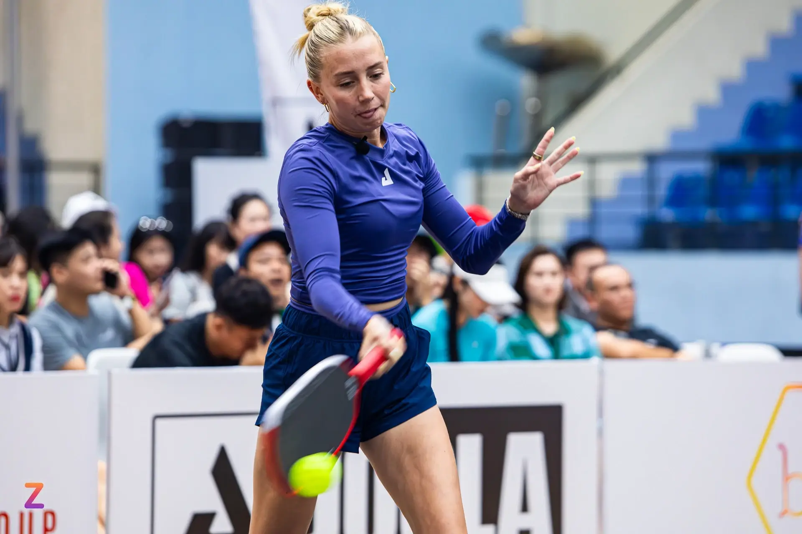
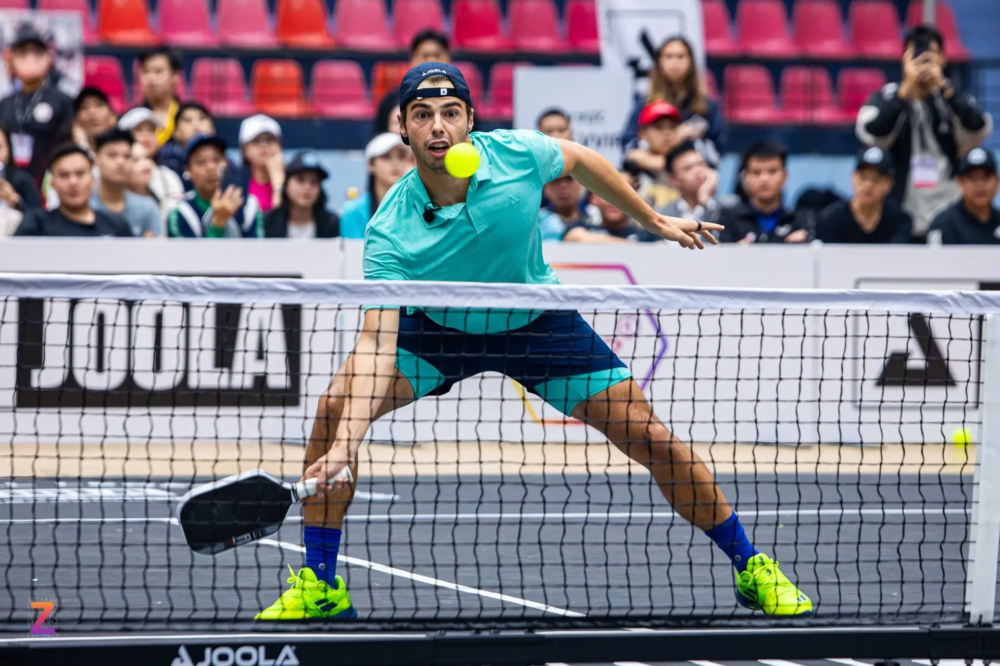

Người chơi pickleball kiếm được bao nhiêu tiền?
Môn thể thao phát triển nhanh nhất nước Mỹ không chỉ thu hút người chơi nghiệp dư, mà còn tạo ra thu nhập đáng kể cho các VĐV chuyên nghiệp.
Pickleball, bộ môn kết hợp giữa tennis và bóng bàn, bùng nổ tại Mỹ với lượng người chơi tăng vọt ở mọi độ tuổi. Tuy nhiên, không chỉ là môn thể thao giải trí, pickleball cũng dần trở thành lĩnh vực thi đấu chuyên nghiệp, mang lại nguồn thu nhập cho các vận động viên hàng đầu.
Theo đại diện của các giải đấu, những vận động viên chơi tốt có thể kiếm được hơn 1 triệu USD mỗi năm thông qua tiền thưởng, phí xuất hiện và hợp đồng tài trợ.
Dù vậy, đây chỉ là số ít. Phần lớn người chơi chuyên nghiệp có thu nhập thấp hơn nhiều. Một số vẫn phải duy trì công việc chính và chỉ tham gia tranh tài vào cuối tuần, theo CBS News.
Tổng thưởng 5 triệu USD
“Giống bất kỳ ngành nghề nào, nếu bạn có tài năng và chăm chỉ cả trên sân lẫn ngoài đời, bạn hoàn toàn có thể sống tốt với nghề,” Josh Freedman, Giám đốc bộ môn pickleball tại Topnotch Management, công ty đại diện cho các vận động viên pickleball, tennis và bóng đá, cho biết.
“Nhưng với người mới bước vào con đường chuyên nghiệp, thu nhập còn khá khiêm tốn. Họ ký hợp đồng tài trợ trị giá chỉ vài trăm đến vài nghìn USD để trở thành đại sứ thương hiệu”, ông nói thêm.

Tuy nhiên, Freedman nhận định tiềm năng vẫn rất lớn vì pickleball còn tương đối mới và ngày càng thu hút sự quan tâm từ khán giả, nhà đầu tư và nhãn hàng.
Thu nhập của vận động viên pickleball chuyên nghiệp đến từ ba nguồn chính: tiền thưởng, mức lương tối thiểu theo hợp đồng và tài trợ thương mại.
Giải Major League Pickleball (MLP), một trong ba hệ thống giải chuyên nghiệp, chi tổng cộng 5 triệu USD tiền thưởng trong năm 2023, phân bổ trong 6 sự kiện. 96 vận động viên tranh tài trong hệ thống này với 3 sự kiện diễn ra tính đến giữa năm 2023.
Người kiếm nhiều nhất sau 3 sự kiện đầu tiên nhận về 125.000 USD tiền thưởng, theo người phát ngôn của giải. Vận động viên thuộc MLP được ký hợp đồng đảm bảo mức thu nhập tối thiểu, kể cả khi họ không đạt thành tích cao trong từng giải đấu.
Trong điều kiện lý tưởng, một vận động viên có thể kiếm tới 300.000 USD/năm từ các khoản thưởng, phí tham dự và tiền lương hợp đồng, theo MLP.
Các trận đấu của MLP diễn ra từ Thứ 5 đến Chủ nhật quanh năm. Trong khi một số vận động viên thi đấu toàn thời gian và sống hoàn toàn bằng thu nhập từ pickleball, số khác vẫn duy trì công việc khác trong tuần và di chuyển đến địa điểm tổ chức các giải vào cuối tuần.
Thu nhập trung bình dưới 6 con số
Vận động viên của MLP có thể tranh tài song song tại các giải do Professional Pickleball Association (PPA) và Association of Pickleball Players (APP) tổ chức.
Giải PPA chi 5,5 triệu USD tiền thưởng trong năm 2023, trải đều trên 25 sự kiện, đánh dấu mức tăng trưởng vượt bậc 83% so với năm 2022.
Năm 2022, mức thu nhập trung bình của vận động viên chuyên nghiệp tại PPA là 96.000 USD, theo thống kê của giải.

Nhiều người chơi tham gia vào các hệ thống để tối đa thu nhập. Freedman tin rằng các quỹ thưởng sẽ còn tăng mạnh khi môn thể thao này trở nên phổ biến hơn, dẫn đến các thương hiệu lớn bắt đầu đổ tiền đầu tư. Nhiều hãng như Monster Energy, Sketchers, Fila đã xuất hiện trên thị trường pickleball.
Dù cơ hội tăng lên nhờ sự phát triển nhanh chóng, kiếm sống bằng pickleball vẫn là con đường nhiều thử thách.
“Nếu muốn theo đuổi môn này, bạn cần chuẩn bị tâm lý. Rất khó khăn lúc đầu, nhưng nếu kiên trì và đạt được thành tích, nó có thể đem đến cuộc sống đáng mơ ước”, Freedman nói.
Bài viết liên quan